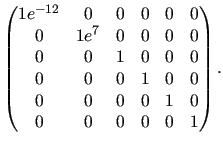

Subsections
relax_disp.select_model
- `R2eff' -
- This is the model used to determine the R2eff/R1rho values and errors required as the base data for all other models,
- `No Rex' -
- This is the model for no chemical exchange being present.
- `LM63' -
- The original Luz and Meiboom (1963) 2-site fast exchange equation with parameters {R20, ..., _ex, kex},
- `LM63 3-site' -
- The original Luz and Meiboom (1963) 3-site fast exchange equation with parameters {R20, ..., _ex, kex, _ex2, kex2},
- `CR72' -
- The reduced Carver and Richards (1972) 2-site equation for most time scales whereby the simplification R20A = R20B is assumed. The parameters are {R20, ..., pA, dw, kex},
- `CR72 full' -
- The full Carver and Richards (1972) 2-site equation for most time scales with parameters {R20A, R20B, ..., pA, dw, kex},
- `IT99' -
- The Ishima and Torchia (1999) 2-site model for all time scales with pA > > pB and with parameters {R20, ..., pA, dw, kex},
- `TSMFK01' -
- The Tollinger, Kay et al. (2001) 2-site very-slow exchange model, range of microsecond to second time scale. Applicable in the limit of slow exchange, when |R20A-R20B| < < k_AB,kB < < 1/tau_CP. R20A is the transverse relaxation rate of site A in the absence of exchange. 2*tau_CP is is the time between successive 180 deg. pulses. The parameters are {R20A, ..., dw, k_AB}.
- `B14' -
- The Baldwin (2014) 2-site exact solution model for all time scales, whereby the simplification R20A = R20B is assumed. The parameters are {R20, ..., pA, dw, kex},
- `B14 full' -
- The Baldwin (2014) 2-site exact solution model for all time scales with parameters {R20A, R20B, ..., pA, dw, kex},
- `NS CPMG 2-site 3D' -
- The reduced numerical solution for the 2-site Bloch-McConnell equations using 3D magnetisation vectors whereby the simplification R20A = R20B is assumed. Its parameters are {R20, ..., pA, dw, kex},
- `NS CPMG 2-site 3D full' -
- The full numerical solution for the 2-site Bloch-McConnell equations using 3D magnetisation vectors. Its parameters are {R20A, R20B, ..., pA, dw, kex},
- `NS CPMG 2-site star' -
- The reduced numerical solution for the 2-site Bloch-McConnell equations using complex conjugate matrices whereby the simplification R20A = R20B is assumed. It has the parameters {R20, ..., pA, dw, kex},
- `NS CPMG 2-site star full' -
- The full numerical solution for the 2-site Bloch-McConnell equations using complex conjugate matrices with parameters {R20A, R20B, ..., pA, dw, kex},
- `NS CPMG 2-site expanded' -
- The numerical solution for the 2-site Bloch-McConnell equations expanded using Maple by Nikolai Skrynnikov. It has the parameters {R20, ..., pA, dw, kex}.
- `MMQ CR72' -
- The the Carver and Richards (1972) 2-site model for most time scales expanded for MMQ CPMG data by Korzhnev et al., 2004, whereby the simplification R20A = R20B is assumed. Its parameters are {R20, ..., pA, dw, dwH, kex}.
- `NS MMQ 2-site' -
- The numerical solution for the 2-site Bloch-McConnell equations for combined proton-heteronuclear SQ, ZQ, DQ, and MQ CPMG data whereby the simplification R20A = R20B is assumed. Its parameters are {R20, ..., pA, dw, dwH, kex}.
- `NS MMQ 3-site linear' -
- The numerical solution for the 3-site Bloch-McConnell equations linearised with kAC = kCA = 0 for combined proton-heteronuclear SQ, ZQ, DQ, and MQ CPMG data whereby the simplification R20A = R20B = R20C is assumed. Its parameters are {R20, ..., pA, dw(AB), dwH(AB), kex(AB), pB, dw(BC), dwH(BC), kex(BC)}.
- `NS MMQ 3-site' -
- The numerical solution for the 3-site Bloch-McConnell equations for combined proton-heteronuclear SQ, ZQ, DQ, and MQ CPMG data whereby the simplification R20A = R20B = R20C is assumed. Its parameters are {R20, ..., pA, dw(AB), dwH(AB), kex(AB), pB, dw(BC), dwH(BC), kex(BC), kex(AC)}.
- `M61' -
- The Meiboom (1961) 2-site fast exchange equation with parameters {R1rho', ..., _ex, kex},
- `M61 skew' -
- The Meiboom (1961) 2-site equation for all time scales with pA > > pB and with parameters {R1rho', ..., pA, dw, kex},
- `DPL94' -
- The Davis, Perlman and London (1994) 2-site fast exchange equation with parameters {R1rho', ..., _ex, kex},
- `TP02' -
- The Trott and Palmer (2002) 2-site equation for all time scales with parameters {R1rho', ..., pA, dw, kex}.
- `TAP03' -
- The Trott, Abergel and Palmer (2003) off-resonance 2-site equation for all time scales with parameters {R1rho', ..., pA, dw, kex}.
- `MP05' -
- The Miloushev and Palmer (2005) 2-site off-resonance equation for all time scales with parameters {R1rho', ..., pA, dw, kex}.
- `NS R1rho 2-site' -
- The numerical solution for the 2-site Bloch-McConnell equations using 3D magnetisation vectors whereby the simplification R20A = R20B. Its parameters are {R1rho', ..., pA, dw, kex}.
- `NS R1rho 3-site linear' -
- The numerical solution for the 3-site Bloch-McConnell equations using 3D magnetisation vectors whereby the simplification R20A = R20B = R20C is assumed and linearised with kAC = kCA = 0. Its parameters are {R1rho', ..., pA, dw(AB), kex(AB), pB, dw(BC), kex(BC)}.
- `NS R1rho 3-site' -
- The numerical solution for the 3-site Bloch-McConnell equations using 3D magnetisation vectors. Its parameters are {R1rho', ..., pA, dw(AB), kex(AB), pB, dw(BC), kex(BC), kex(AC)}.
[numbers=none]
relax> relax_disp.select_model('LM63')
[numbers=none]
relax> relax_disp.select_model(model='LM63')
The relax user manual (PDF), created 2014-09-04.